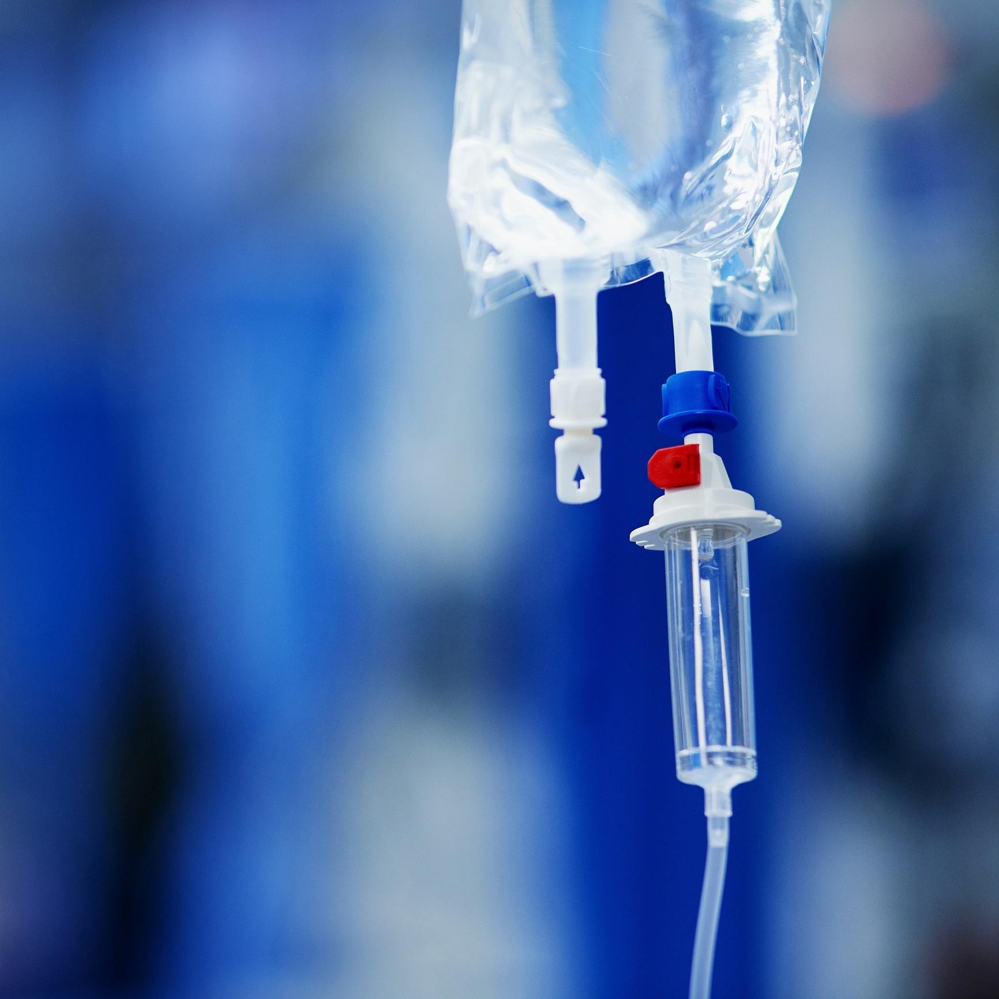

Paciente João Paulo, 18 anos deu entrada com queixa de Cefaleia, Náuseas e Epigastralgia. PA- 120x80 T°C- 38.3 FR- 17ipm Pulso- 92bpm Dor- 9

Fazer ultassom do abdome Exame de sangue

infusão do soro com Zofran Flex OU Dramin B6
Análisar a ultrassonografia
Análisar exame de sangue

Análisar se a melhora
Caso de internação

Continuar com os soros
div class="passo" id="passo-8">
Acompanhar o paciente
div class="passo" id="passo-9">
Acompanhar o paciente